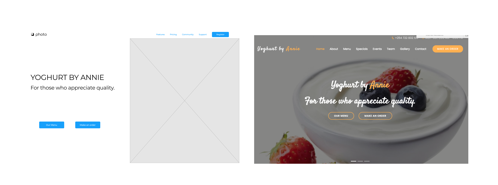
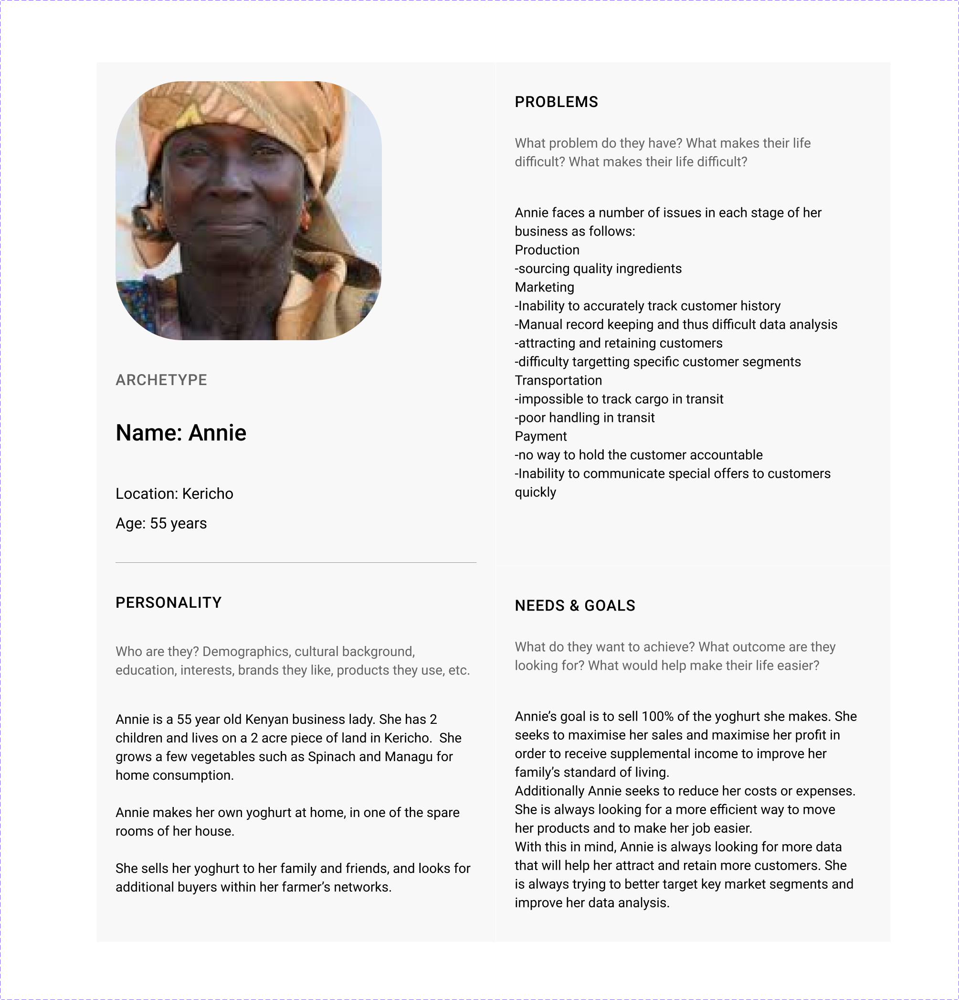

Yoghurt by Annie
An organic yoghurt making company seeking to improve its customer analysis and customer service.

1.EMPATHISE
Interview/Seek to understand
In this phase I aimed at understanding the client’s challenges, needs and opportunities.I sought insight into the current model of business as well as the flow of resources. Furthermore, I tried to put myself in the shoes of her typical client who would be the main user. Annie is a self employed business lady in her mid-fifties. She seeks a more efficient and effective way to serve her clients of her growing yoghurt selling enterprise. She is keen to maintain her existing customers whilst finding new ways to serve her growing demand.2.DEFINE
Persona
Annie is a 55 year old business lady. She has 2 children and lives on a 2 acre piece of land in Kericho. She grows a few vegetables such as Spinach and Managu for home consumption. Annie makes her own yoghurt at home, in one of the spare rooms of her house. Annie sells her yoghurt to her family and friends, and looks for additional buyers within her farmer’s networks. Her objectives are to receive some supplemental income to improve her family’s standard of living.
Role objectives
Annie has the objectives of:- receiving fair compensation for products i.e. maximising price and maximising sales
- reducing overhead costs
- improving analysis and insight into existing customers
- maximising customer acquisition and retention
Challenges & Pain points
The issues Annie is facing can be summed up as follows:- Inability to communicate special offers to customers quickly
- Inability to segment markets
- Inability to accurately track customer history
- Inability to track cargo
- Manual record keeping and thus difficult data analysis
- Inability to reach certain market segments due to the manual nature of current marketing activities
Problem solution
With these challenges and pain points in mind , it was decided to focus on building an E-Commerce solution that would enhance marketing endeavours. Customers should be able to order and pay for their yoghurt. They should also be able to input their delivery location details. However, close attention would also need to be paid to the database creation to improve data analysis as per the client’s request.3.IDEATE
Diverge/converge
A number of ideas were shared in order to arrive at a solution that was beneficial to all members. Some of these ideas converged and harmonised. Some of the key ideas shared were:- Build a social network
- Build an online repository
- Build a marketing platform
- Build a transit package tracking app
Prioritization
The key conclusion was that E-Commerce shop should be prioritised. A platform for the marketing and sale of Yoghurt. Key features at the clients request were a menu for the display of special items and a contact form.4.PROTOTYPE
Storyboards
I began by creating storyboards of a typical process consistent with the interview and journey maps. The first storyboard illustrated the typical fail scenario, while the second painted a picture of the desirable success scenario.Fail Scenario vs Success Scenario

Journey Maps
The journey maps below show the current undesirable scenario(fail) followed by the ideal scenario(success).- Fail
- Success

.png)
Wireframes
.png)
High Fidelity Mock ups & Prototype
The outcome was a prototype whose screenshots are shown below.